Mundial Francia 1938

Selección Campeona del Mundo
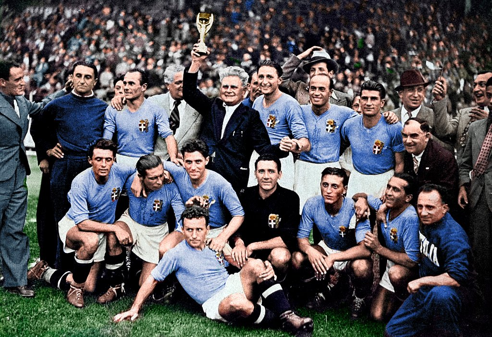
Póster Oficial
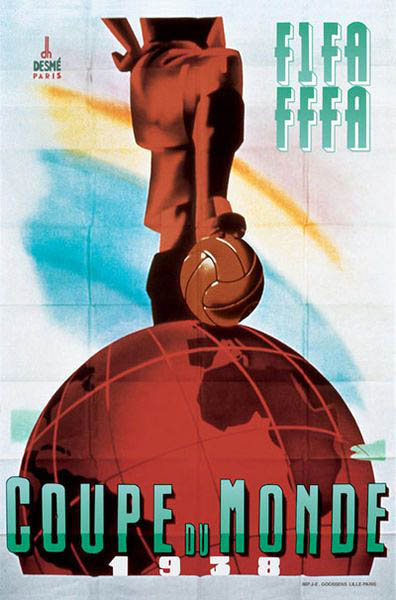
Trofeo del Mundial

Álbum de Cromos

Balón Oficial
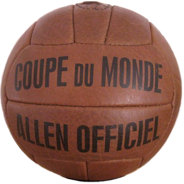
Participantes

Estadísticas del Mundial
Estadios Oficiales
Stade Olympique de Colombes
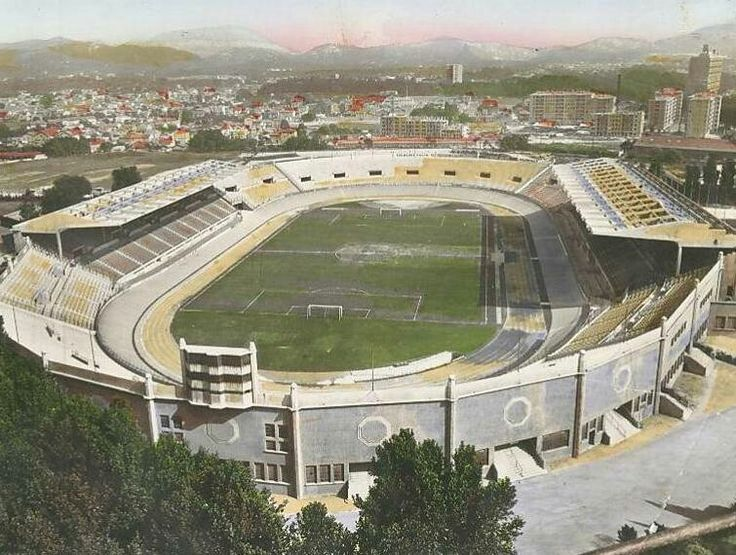
Stade Vélodrome
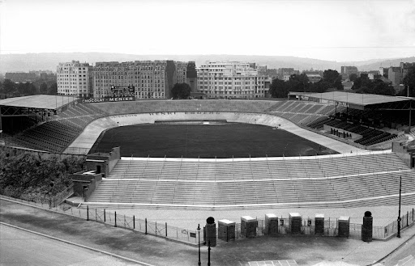
Parc des Princes
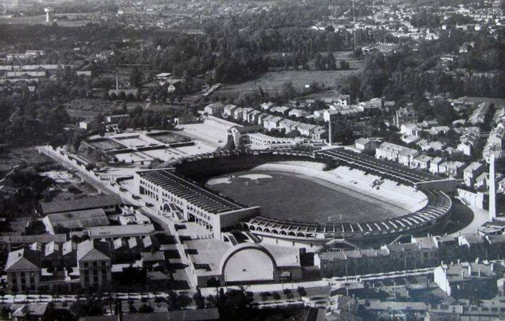
Parc Lesure
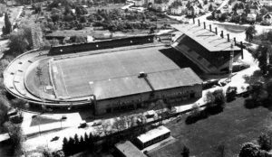
Stade de la Meinau
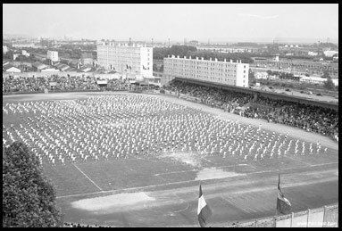
Stade Jules Deschaseaux
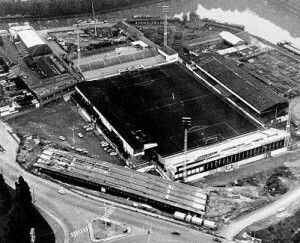
Stade Victor Boucquey
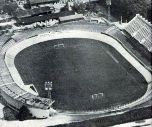
Stade Auguste-Delaune
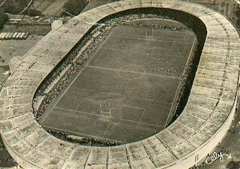
Stadium de Toulouse
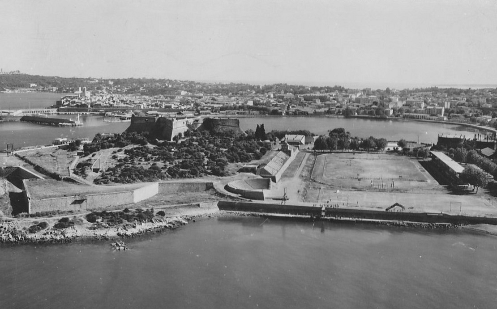
Stade du Fort Carré
Semifinales
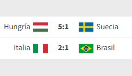
Gran Final
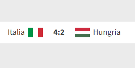
Datos Relevantes